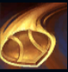
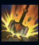
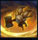
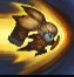
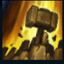

Poppy
| Keeper Of The Hammer | |
|---|---|
| Release date | 13.01.2010 |
| Class | Warden |
| Positions | Top,Jungle,Support |
| Resource | Mana |
| Range type | Melee |
| Adaptive type | Physical |
| Base statistics | |||
| Health | 540-2070 | Resource | Mana |
| Health regen. | 8-21.6 |
Mana regen. | 7-18.9 |
| Armor | 38-97.5 | Attack damage | 64-132 |
| Magic resist. | 32-53.25 | Crit. damage | 175% |
| Move. speed | 345 | Attack range | 125 |
Runeterra nu duce lipsă de campioni viteji, dar puțini sunt la fel de tenace ca Poppy. Înarmată cu legendarul baros al lui Orlon, o armă de două ori mai mare ca ea, această yordle hotărâtă îl caută de nenumărați ani pe faimosul ''erou al Demaciei'', căruia îi aparține de drept barosul. Între timp, Poppy se aruncă în luptă cu curaj, îndepărtând inamicii regatului cu fiecare rotire de baros. |  |
AMBASADOAREA DE FIER Poppy își aruncă scutul, care ricoșează din țintă. Poppy îl poate ridica pentru a primi un scut temporar. | ||
|---|---|---|---|---|
 |
LOVITURA ZGUDUITOARE Poppy își rotește barosul, provocând daune și creând o zonă care va încetini inamicii și va exploda după o perioadă scurtă de timp. | |||
 |
DARZENIE Poppy primește armură și rezistență la magie în mod pasiv. Bonusul crește când Poppy are foarte puțină viață. Poppy poate activa ''Dârzenia'' pentru a primi un bonus la viteza de mișcare și a opri năpustirile inamicilor din jurul ei. Dacă oprește o năpustire, inamicul este încetinit și pironit. | |||
|  |
AVANT EROIC Poppy se aruncă asupra țintei și o împinge înapoi. Dacă o împinge în perete, o amețește. | |||
 |
SENTITA BAROSULUI Poppy pregătește o lovitură de baros care va arunca inamicii foarte departe. |